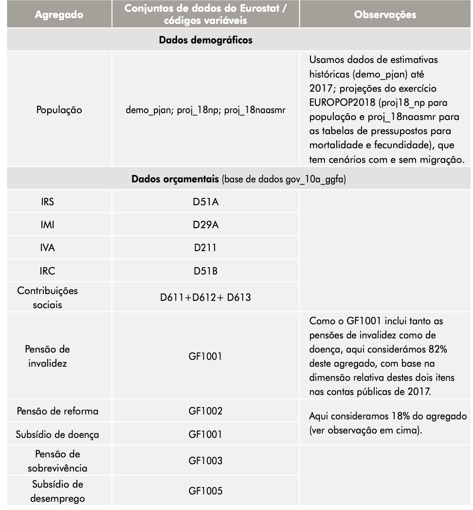
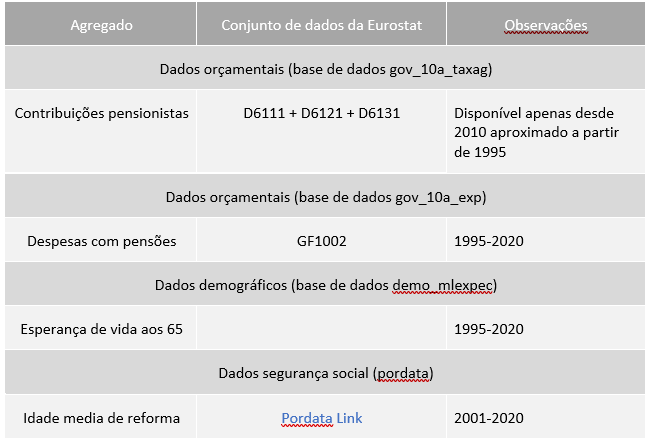
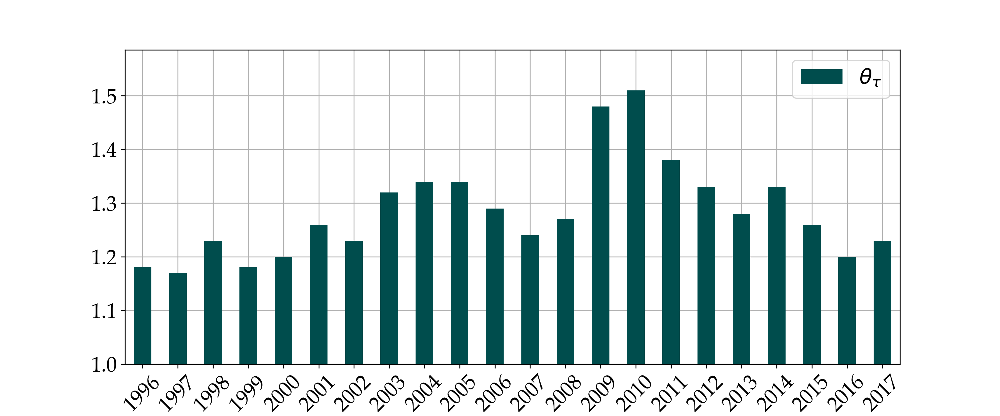
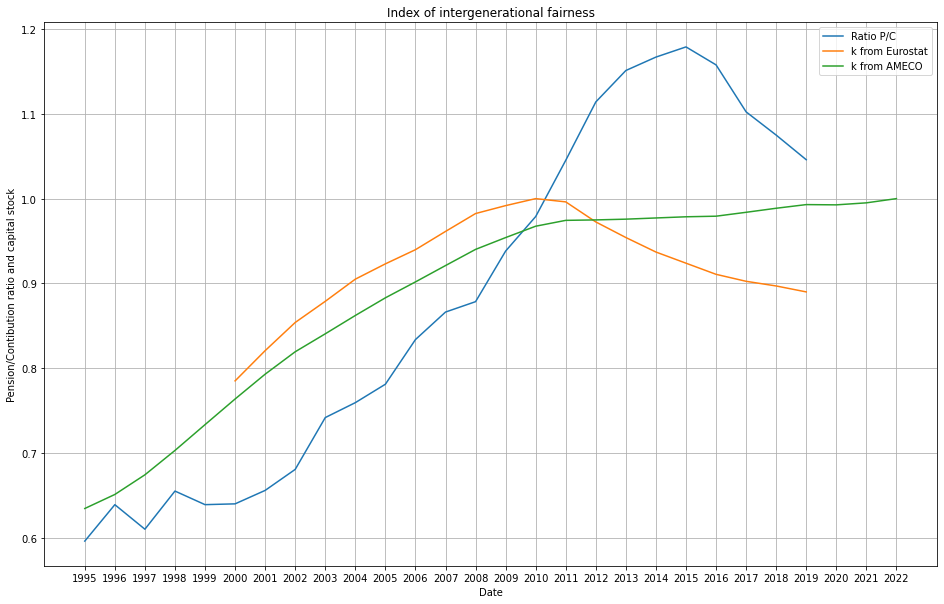
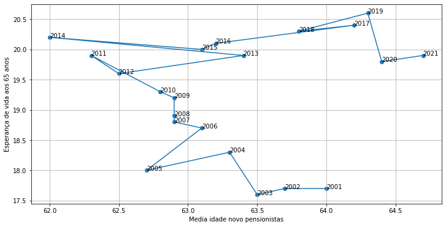
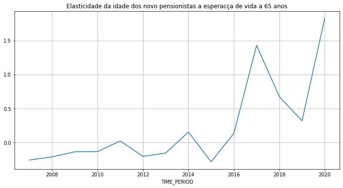

<!doctype html>
<html lang="en">

	<head>
		<meta charset="utf-8">

		<title>reveal.js - Macro View </title>
        

		<link rel="stylesheet" href="dist/reset.css">
		<link rel="stylesheet" href="dist/reveal.css">
		<link rel="stylesheet" href="dist/theme/beige.css" id="theme">
        

		<!-- Theme used for syntax highlighting of code -->
		<link rel="stylesheet" href="plugin/highlight/monokai.css">
       
	</head>

	<body>

   

		<div class="reveal">

			<div class="slides">


                <!-- Slides are separated by three dashes (quick 'n dirty regular expression) -->
                <section data-markdown data-separator="^---$" data-separator-vertical="^\n--\n$">
                    <script type="text/template">
                        <!-- .slide: style="text-align: center;" -->

                        
                        ### Indicadores de justiça fiscal Intergeracional

                        ### Finanças Públicas

                        #### Francesco Franco 

                        #### 10 - 2 - 2023

                        
                        


                        ---

                        <!-- .slide: style="text-align: left;" -->
                       
                        ### Indices
                        
                        | Area               | Indicador         |  descrição    ||
                        |:-------------------|------------------:|-----------:|---------------:|
                        | Finanças Publicas  |  $\theta_{b\tau}$ | fator pelo qual impostos +-           |                |
                        | Finanças Publicas  |  $\theta_{bg}$    | fator pelo qual beneficios +-           |                |  
                        | Segurança Social   |  $\frac{Pi}{\Xi}$ | rácio de pensões pagas sobre as contribuições pagas            |                |                
                        | Segurança Social   |  $\eta_{\xi\mu}$  | elasticidade da idade média da reforma à esperança média de vida aos 65 anos            |                |        
                     
                        
                        ---

                        
                        <!-- .slide: style="text-align: left;" -->

                        ### Finanças Publicas Dados micro


                        <center></center>

                        ---

                        <!-- .slide: style="text-align: left;" -->

                        ### Finanças Publicas Dados macro


                        <center></center>
 
                        ---

                        <!-- .slide: style="text-align: left;" -->

                        ### Segurança Social Dados macro


                        <center></center>
 
                        ---

                        <!-- .slide: style="text-align: left;" -->
                       
                        ### Conceitos de equidade intergeracional
                        
                        ##### Finanças Publicas

                        Os indicadores contabilísticos de equidade geracional baseiam-se na ideia de que a carga monetária para atingir o actual nível de benefícios
                        per capita não deve aumentar para manter a sustentabilidade fiscal.
                        
                        ##### Segurança Social

                        Uma abordagem diferente, mais teoricamente formal, para medir a equidade
                        intergeracional é comparar os resultados económicos observados com as previsões teóricas de uma economia que pesa as diferentes gerações.  


                        ---

                        <!-- .slide: style="text-align: left;" -->
                       
                        ### Finanças Publicas 

                        Metodologia: Generational Accounting de Auerbach et al. (1991a, 1994). Indice porposto em Franco et al. (2019)

                        $$\theta_{\tau b}=\frac{\sum_{s=0}^{\infty}\sum_{i}\sum_{x\in X}D^{s}g_{\bar{t},x}^{i}P_{\bar{t}+s,x}+B_{\bar{t}-1}}{\sum_{s=0}^{\infty}\sum_{i}\sum_{x\in X}D^{s}\tau_{\bar{t},x}^{i}P_{\bar{t}+s,x}}$$
                        
                        `$$\left\{ \frac{B_{s}}{Y_{s}}\right\}_{s=t+T} < 0.6$$`

                        `$$ x\in\left\{ V,E,O\right\}  $$`

                        O indice mede as transferências monetárias líquidas (em euros as preços constantes) entre gerações (com beneficios e semelhante).
                        
                        ---

                        

                        <!-- .slide: style="text-align: left;" -->
                       
                        ### Finanças Publicas indicador

                        Em 2018 e 2019 o indicador melhorou, 2020 e 2021 vao ser excluidos por causa Covid. Em esto exercicio naa aplico o vinculo da divida. 

                        <center></center>


                        
                        ---

                        <!-- .slide: style="text-align: left;" -->
                           
                        ### Segurança Social

                        Metodologia: Social Welfare Function (Samuelson 1947) com peso para cada geração. Nesta abordagem, cada geração tem um peso de bem-estar,
                        pelo que um aumento no peso das gerações futuras implica que a mudança implícita nas afetações melhora o bem-estar das gerações futuras.
                        Da mesma maneira, se o peso do bem-estar das gerações futuras diminuir, as novas afetações diminuem o bem-estar das gerações futuras.
                        
                        Propomos de analisar a evolução de

                        -  $\frac{Pi}{\Xi}$: se > 1 favoravel a gerações presentes, se < 1  favoravel a gerações futuras
                        -  $\eta_{\xi\mu}$: se < 0 favoravel a gerações presentes, se > 0  favoravel a gerações futuras

                        e inferir a mudança implicita do peso relativo entre gerações $\psi$.                        


                        ---


                         <!-- .slide: style="text-align: left;" -->

                         ### Metodologia

                         The First Best is the solution to the following maximization problem perfomed by the planner that weight a generation born at $t$ by $\lambda_{t}$ and $\psi=\frac{\lambda_{t}}{\lambda_{t-1}}$

                        `$$\max U=\lambda_{-1}\beta u(c_{20})+\sum_{t=0}^{T}\lambda_{t}\left(u(c_{1t})+\beta\left(1-\mu\right)\left(u\left(c_{2t+1}\right)-v\left(\xi_{t+1}\right)\right)\right)$$`

                         s.t.
                         `$$c_{1t}+c_{2t}\frac{1-\mu}{1+n}+k_{t+1}\left(1+n\right)\left(1+\gamma\right)=\bar{\xi}_{t}f\left(\frac{k_{t}}{\bar{\xi}_{t}}\right)+\left(1-\delta\right)k_{t}$$`
                         given $k_{0}\ and\ k_{T}$ where `$\bar{\xi}=\left(1+\frac{\left(1-\mu\right)}{1+n}\xi\right)$` and $\gamma$ the labor productivity trend. 

                        
                        ---

                        <!-- .slide: style="text-align: left;" -->

                        ### Segurança Social
                        
                        Indice $\frac{Pi}{\Xi}$ passou acima do 1 recentemente e agora deixe novamente (efeito sobre capital-coincidencia-signo coreto)

                        <center></center>
                       
                        ---

                        <!-- .slide: style="text-align: left;" -->

                        ### Segurança Social
                        
                        Esperança de vida e idade a reforma - mudança em 2015

                        <center></center>
                        

                        ---

                        <!-- .slide: style="text-align: left;" -->

                        ### Segurança Social
                        
                        Elasticidade da idade a reforma a esperança de vida

                        <center></center>

                        ---

                        <!-- .slide: style="text-align: left;" -->

                        ### Normalização

                        TBA no grupo de trabalho
                    
                        ---


                        OBRIGADO

                        

                       

                       


                    </script>
                </section>

            </div>
		</div>

		<script src="dist/reveal.js"></script>
        <script src="js/pdfexport.js"></script>
        <script src="plugin/markdown/markdown.js"></script>
        <script src="plugin/highlight/highlight.js"></script>
        <script src="plugin/notes/notes.js"></script>
        <script src="plugin/math/math.js"></script>
        <script src="plugin/search/search.js"></script>
        
       
     
      
		<script>

			Reveal.initialize({
				controls: true,
				progress: true,
				history: true,
                center: true,
                touch: true,
               
               
                math: {
                    mathjax: 'https://cdn.jsdelivr.net/gh/mathjax/mathjax@2.7.8/MathJax.js',
                    config: 'TeX-AMS_HTML-full',
                    // pass other options into `MathJax.Hub.Config()`
                    TeX: { Macros: { RR: "{\\bf R}" } }
                    },
        
               
                

				plugins: [ RevealMarkdown, RevealHighlight, RevealNotes,RevealMath]
			});

		</script>

	</body>
</html>
